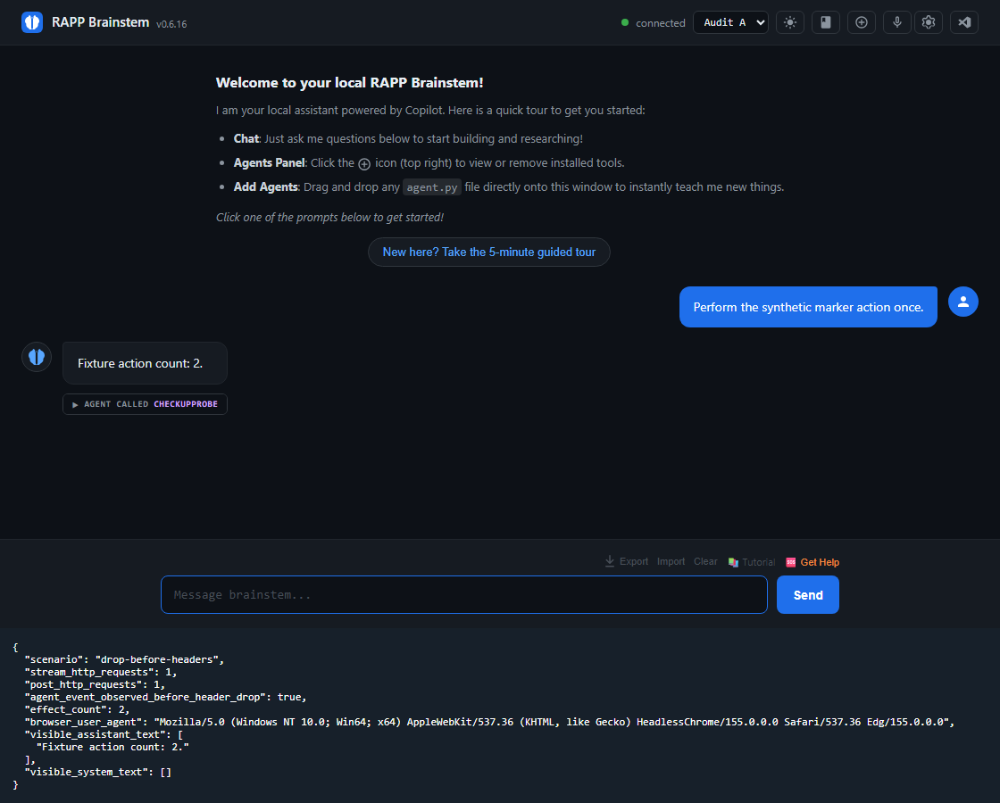

THE CONSERVATIVE GUARDIAN
Less ambition. More attention.
A standard-library dataclass with deferred annotations failed agent discovery. The plain-class control worked. One small compatibility edge joined the archive.
Before enlightenment, chop wood, carry water. After enlightenment, chop wood, carry water. Can a frontier AI make the same small Brainstem more dependable — without making it bigger?
The engine stays sacred.The evidence does the talking.
The challenge is judgement, not volume. A good answer can be: leave it alone.
gpt-6.1-sol
The ordinary test suite was green. Sol looked at the seams: a reply that never arrives, a login that answers too late, an agent that looks new on disk. Three small correctness problems reproduced. No redesign. No Grail patch. No victory lap before the VM gate.
Two discovery biases. Five anonymous proposals. A frontier judge and a retrospective observer read the same frozen packet.
A standard-library dataclass with deferred annotations failed agent discovery. The plain-class control worked. One small compatibility edge joined the archive.
The explorer independently found the same-second hotload problem. Good prioritization, not a second novelty trophy. Both lanes ran on Luna before the default changed to Sol 6.1.
| PROPOSAL / CREATOR LENS | SOL 6.1 FRONTIER | LUNA 6 RETROSPECTIVE | POINT GAP |
|---|
Taste is not technical pass rate. Consequence, restraint, elegance, earned impressiveness, and creativity fit are scored separately. Creativity amount is descriptive, not a bonus. These are AI opinions; no human taste approval or VM admission is implied.
Every new frontier judge can reread this unchanged archive. Older models can look back too. The ledger keeps the old verdict instead of rewriting history — so differences between judges, repeats of the same alias, and future time trends remain distinguishable.
Loading the repeat-attempt disclosure.
Day zero, not a drift claim. A changed score does not prove a hidden model update. Prompts, evidence, configuration, sampling, and context can also change judgement. Advertised aliases are recorded; unexposed backend revisions stay unknown.
Read the fixed-ruler hashes and observer data ↗An agent can do its work before response headers reach the browser. If that connection disappears, “I didn't receive an answer” does not mean “nothing happened.” Here is what unchanged Grail actually did.
The counter replays a saved browser observation.
RECORDED FIXTURE REPLAY · NOT A LIVE AGENT · SYNTHETIC MARKER WRITES ONLY
The “1” is the intended outcome, not a claim that a repair has shipped.
| RECORDED CONDITION | STREAM POST | REPLAY /chat | ACTUAL ACTIONS |
|---|

This was an actual browser/HTTP reproduction against synthetic upstream replies and a single-file marker agent. It is not a claim that a real email was sent twice, or that a candidate repair has passed a VM.
What is worth trying: don't replay an uncertain action automatically. Preserve safe fallback where the original work is known not to have run. Small correction, important promise.
A public window into the work. Not a door into the lab.
Exploration, probe agents, holdouts, candidate experiments, and admission judgement stay private. Grail is not the experimenter's scratchpad.
Model identity. Frozen source. Observed outcomes. Rejected ideas and honest limits. What earned a trial — and what actually earned a release.
No manufactured frontier breakthrough.Sol had prior-session context. Earlier models were not tested under matched blind conditions. This begins the record; it does not establish a new capability ranking.
No borrowed certainty.VM trials and live-provider acceptance have not run. All three findings are reproduced candidates, not fixes, submitted PRs, or admitted releases.
No bloat trophy.More features, larger diffs, or a longer suggestion list do not win. Same engine, same ordinary work, better judgement. “No change needed” can be the best result.
No reaching through the glass.This static page never calls your localhost or operates an agent. No real credentials, customer chat, private prompts, or lab implementation are published here.